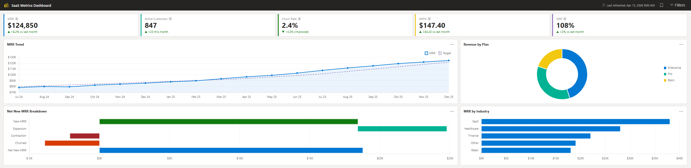

I'm Guilbert Maglasang — a Senior Power BI Developer with 20+ years in data and analytics. I build Power BI solutions business leaders actually use: semantic model design through deployment, governance, and adoption.
Screenshots can't show how a report behaves. Every project here ships with a live, in-browser demo — and the Power BI project includes the actual .pbix so you can inspect the model yourself.

Open live demo ↗An executive SaaS analytics report — MRR trends, churn analysis, customer health, and revenue breakdowns across three interactive pages. Published both as a live browser demo and as the actual .pbix file, so hiring managers can open the star schema model and 41 DAX measures directly in Power BI Desktop.
A fully functional, browser-based CRM I built to run my own job search at scale — 392 recruiter conversations, 862 connections, and 200 applications tracked in a single HTML file with no backend. Built with AI-assisted development; all data stays 100% local.
Eight measures from two working models, each annotated with the pattern, the problem it solves, and why it's non-trivial.
Churned MRR =
VAR _curDate = MAX(Fact_Subscriptions[Date])
VAR _prevDate = EDATE(_curDate, -1)
VAR _first_churn_month =
CALCULATETABLE(
ADDCOLUMNS(
VALUES(Fact_Subscriptions[Customer_Key]),
"FirstChurn", CALCULATE(
MIN(Fact_Subscriptions[Date]),
Fact_Subscriptions[Status] = "Churned",
ALL(Dim_Date))
), ...
)
RETURN
SUMX(
FILTER(_first_churn_month,
[FirstChurn] = _curDate),
... -- prior-month MRR lookup per customer
)
A naive churn-MRR measure double-counts customers who churned in earlier months. This one tags each customer's first churn date, filters to first-time churns in the current period, then looks up their prior-month MRR — managing three filter contexts at once.
Cohort Retention % dual date contexts via ALL(Dim_Date)Net Revenue Retention point-in-time snapshots with EDATEDefects per 1000 volume-weighted aggregation via SUMXProjects Marker disconnected slicer + ISINSCOPE